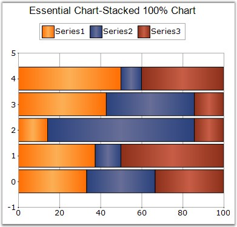

This chart type displays multiple series of data as stacked Bars ensuring that the cumulative proportion of each stacked element always totals 100%. The y-axis will hence always be rendered with the range 0 - 100.

Figure 46: 100% Stacked Bar Chart
|
Details | |
|
Number of Y values per point |
1 |
|
Number of Series |
Two or more. |
|
SupportMarker |
No |
|
Cannot be Combined with |
Any other chart types. |
|
[C#]
ChartSeries series1 = this.ChartWebControl1.Model.NewSeries("chart", ChartSeriesType.StackingBar100); series1.Points.Add(0, 25.3); series1.Points.Add(1, 45.7); series1.Points.Add(2, 97.3); series1.Points.Add(3, 20.6); series1.Points.Add(4, 125.8); series1.Points.Add(5, 216.1); this.ChartWebControl1.Series.Add(series1); |
|
[VB.NET]
Dim series1 As ChartSeries = Me.ChartWebControl1.Model.NewSeries("chart", ChartSeriesType.StackingBar100) series1.Points.Add(0,25.3) series1.Points.Add(1,45.7) series1.Points.Add(2,97.3) series1.Points.Add(3,20.6) series1.Points.Add(4,125.8) series1.Points.Add(5,216.1) Me.ChartWebControl1.Series.Add(series1) |
See Also